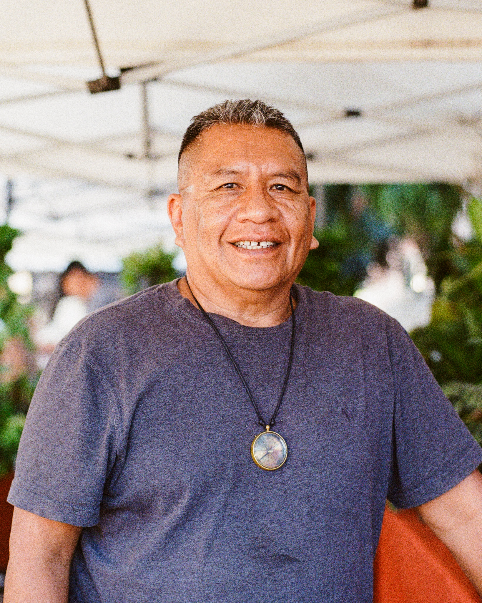

Christopher Braig
The neighborhood saxophonist
Every now and then I will hear the sweet sound of a saxophone ringing right from outside my apartment. Chris Braig, jazz musician and filmmaker, teaches a music program at the charter school down the block from me. To avoid traffic he commutes early, finds parking, and practices scales in the back of his car before going to meet his students.
One morning, he blessed me the opportunity to take his portraits while he played for me and shared his life stories. Once, a traveling musician with the army band, Chris used to play music for the serving men of this country.
Now, he teaches the youth how to foster their own passions in music.
Music has taken him far and wide and connected him with many lives; it brought me out of my front doorsteps and provided me the opportunity to cross paths with him.
Funny how art does that -- Connects people of all kind.

Danny
Moab's most hospitable
I stayed at Danny’s campsite, High Sage Hogans in Moab UT, back in June of 2025. It was a short one night stay. The morning before I left, Danny took me on a tour of his campsite which doubled as a farm with animals and harvesting crops. I met Ringo, the his herding dog, fed goats from hay bales, and ate lemony sorrel from his leafy garden.
Danny told grand stories of how had hiked and climbed the Grand Tetons. I asked about the old school bus in the corner of the campsite. It was gutted inside, the original seats gone. He would build it to travel to various climbing sites with fellow journeymen. A true adventurer!
He was filled of excitement as he rattled off his plans to explore America’s vast landscapes. And I knew that at the end of each expedition he would return to his homestead in Moab to Ringo, to his billygoats, to his garden, and to the guest of his campsite — all of which he took expectational care of.
Thank you Danny for letting me take portraits of you. I’m so glad you were pleased by them. Thank you for welcoming this curious visitor. Thank you for sharing your stories. Thank you for reminding me just how hospitable people can be.
Gary Tyler
My Mentor in Hope
I’ve worked for Gary for the past 1 & 1/2 years, though he’ll quickly tell you that he is my friend before being my boss.
Gary is an amazing storyteller who chooses to express himself through the medium of quilting, a skill he learned from his grandmother in his youth but later picked up in Angola penitentiary while serving nearly 41 & 1/2 years for a crime he did not commit.
Having been the youngest person on Louisiana’s death row (a sentence that would later change to life in prison due to Louisiana temporarily outlawing the death penalty) and came into his adulthood in a prison infamous for its harsh and cruel conditions, it astonishes everyone who meets Gary how unjaded he is. My many conversations with him has revealed to me a marvelous mind of resilience and hope; one who believes that you can make something beautiful no matter cards you have been dealt. This is why Gary uses the butterfly motif so frequently in his signature quilts — a symbol of transformation.
Gary has taught me to have hope even when things seem hopeless in our current political landscape.
A frequent topic that comes up in our conversations at the studio is politics, and even when things seem dire, Gary always expresses his optimism my generation.
“Young people are always on the right side of history” he would often remind me. And while I do not have the answers of how to right the immediate wrongs that I see unfolding in this country, knowing that Gary believes that I can can make significant change with the cards I have been dealt gives me great hope.
Gary, thank you for all the wisdom you have imparted on me. Looking forward to many more nuggets shared over making quilts together.
—
I can not do Gary’s full story justice in my own writing — and quite frankly no one can but him; which is why Gary wrote his own memoir, “Stitching Freedom”. I think this book can offer everyone lessons of how to be a better advocate and human being as Gary teaches me every day.

Francisco
Crazy Hands
Amongst the braided money trees and hearty succulents at the Echo Park farmer’s market, stands a small case of jewelry– the kind crafted from quality silver and exquisite gems. Most pieces in that case were made by Francisco, a jeweler, silversmith, and true tinkerer. Every Friday, Francisco and his daughter, Dianna, set up to sell their jewelry and plants to the patrons of the farmer’s market, myself included.
Francisco and I were quick to become friends after exchanging bits and pieces about our cultural background.
We have a shared appreciation for learning about traditions from places others call home. After a couple trips to the farmer’s market and purchases of earrings featuring moonstones that glistened in the light and garnets of deep red, I earnestly asked Francisco to show me how he makes his jewelry.
He was quick to accept my request and welcome me to his studio.
At his studio, I learned that Francisco is a man of many trades – from wood work to leather to silver. He showed me wooden planters modeled after paleta carts and garden stakes with carved green parrots indicative of his hometown of Guadalajara, all meant to accompany his daughter’s plants. While he began to show me how he crafts his jewelry, he shared with me stories of how his urge to create had been prolific since a young age.
“They used to call me crazy hands,” said Francisco, referring to his constant crafting, recycling old items into new. He then pointed my attention to an art print by Salvador Dali that hung on the walls of his studio saying, “They called Dali crazy for all the art he created. I am similar to him.” As I watched Francisco make two beautiful silver rings in a process that involved melting and soldering, hammering and polishing, not once did his hands seem “crazy” to me. I laid witness to an extreme care for his craft. He approached each piece with a gentle calmness.
“Crazy” often refers to the obsession an artist has with their own art. But watching his art up close, Francisco’s obsession turned into a beautiful focus and a deep reverence for the craft of jewelry making. I think these photos convey the essence of care he puts into his handy-work – crazy, yet beautiful.